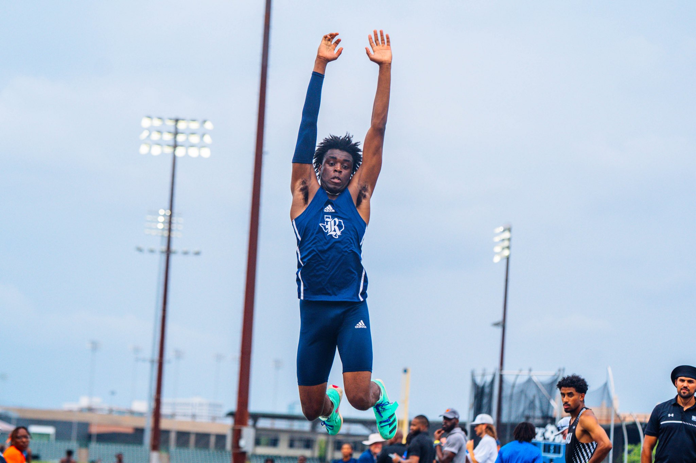
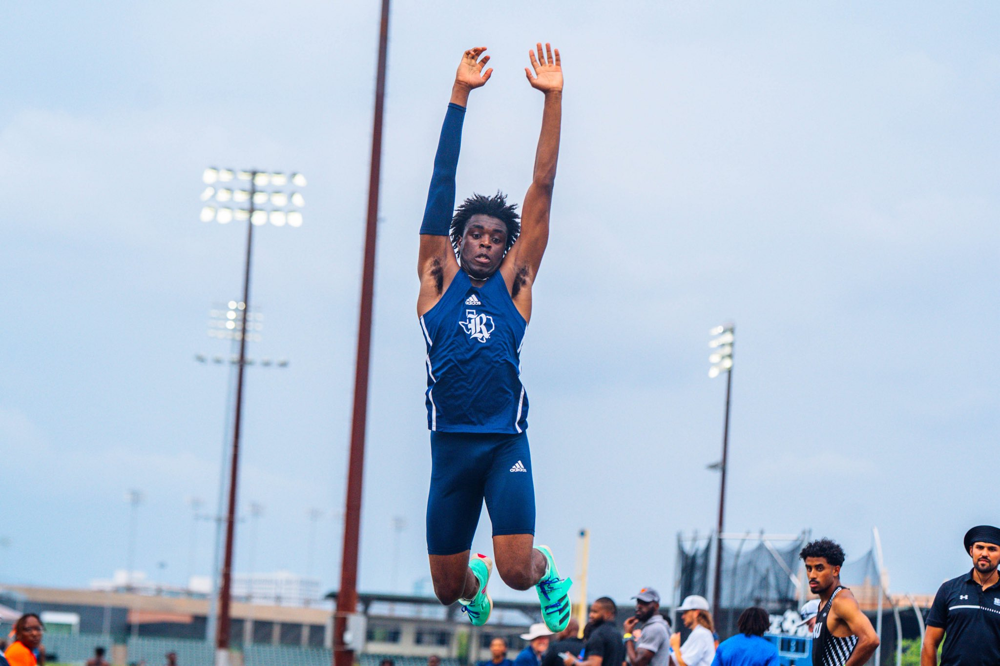

Athletic Achievements
As a member of Rice University's Division I Track & Field team, I specialize in hurdles, triple jump, and long jump. Competing at a high level has taught me discipline, resilience, and the importance of teamwork.
Academic Honors
- 2022-23 C-USA Commissioner's Honor Roll
- 2023-24 Outdoor: Competed at four meets...Set a personal best in the triple jump at the J. Fred Duckett Twilight Meet, finishing ninth.
 
